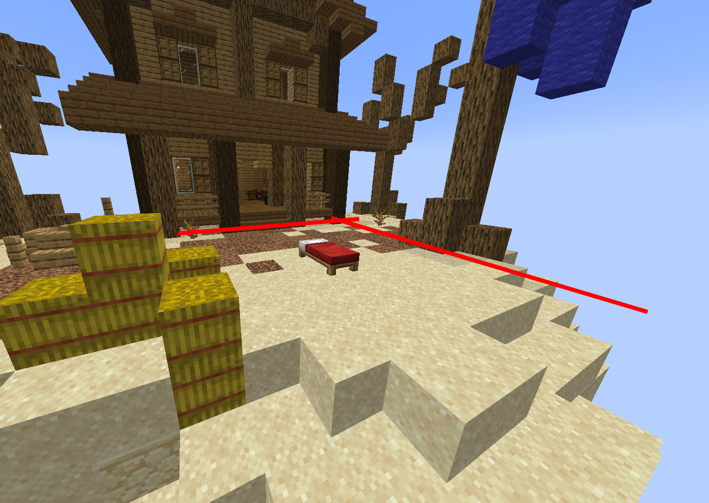
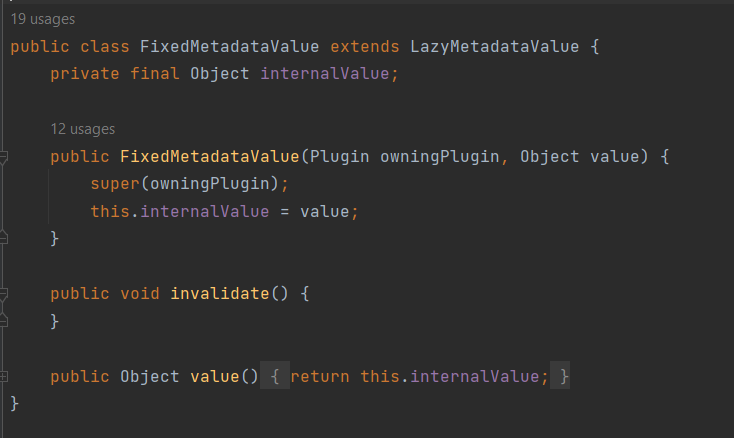
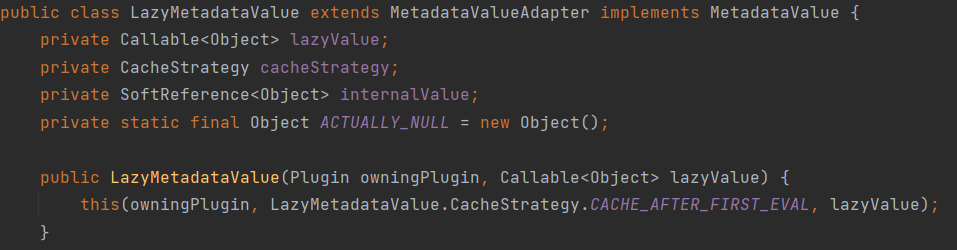
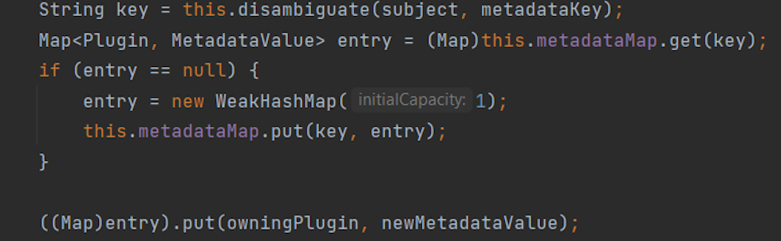
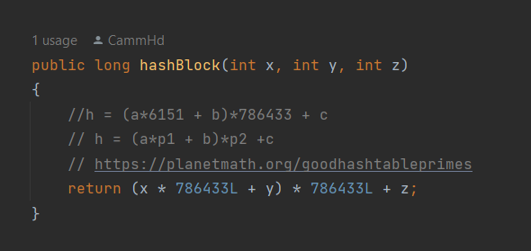

Bit hacking block boundaries
(Alliteration is awesome)
2025-07-24

The average base of a team in a Bedwars match. The red lines demarcate a probable area which could be used as a boundary for where blocks can be interactable, and where they may be restricted.
Map by Weark on Stardix MC, obtained from PlanetMinecraft
The naive solution
In order to implement this functionality, one way we could achieve this is to track blocks by assigning them a tag. Consider we give each block a possible tag, consisting of a string, which determines the properties that the block has.
Spigot already has an API built for this which uses metadata stores. An idea is that for each block in the boundary of the arena, you could give the block some meta data, and then when an interaction happens, such as an attempt at a block break or place, you could either allow or cancel the event.
Fixed metadata class

Lazy metadata class

The metadata is validated and then set in the CraftBlock class

Hashing Introduction
In order for us to use a different tracking system for blocks, we must first determine how blocks should be tracked in the first place.
One way to do this is to use a hash function which relies on prime numbers to generate values for blocks using their coordinates. Another one would be to simply concatenate all of the coordinates into a string and use it as an id for the block.

The issue with these 2 methods however is that the prime number method, although it performs decent for a good number of blocks, there is the chance that we will have a hash collision, which is significant as we may need to hash a large number of blocks, potentially in the millions. The issue with concatenation of coordinates is that if the coordinates are very large, say + or - 10 000 or more, then each id that is created will also be very large, resulting in increased memory use.
A better way to hash
Since the arena is a boundary defined by config, we can use these boundary coordinates to instead base our hashing function relative to these coordinates.
Because each block will potentially need an id, instead of generating large numbers from primes with the hope that they will be different from each other, we can instead simply, count all of the blocks from these relative coordinates. This will guarantee that each id is different and also allow us to use smaller numbers for storing these numbers, potentially allowing us to save more memory.
To do this, we will first translate the raw coordinates of the boundary of the arena to coordinates relative to the more negative of the two corners. Consider we have the raw coordinates c1 = (1,4,6) and c2 = (3,6,9).
Our relative coordinates would be r1 = (0,0,0) and r2 = (2,2,3). This is done by subtracting the difference of 0 to c1 from c2 and setting c1 to 0. To actually achieve the hash, we can think of our logic first in 2D and then in 3D.
Consider a 2x3 grid as our boundary. If we want to hash the striped square, we will need to count the amount of completed rows which have come before it, and then know it's position relative to the closest row start. This is akin to grouping numbers in 10s and then calculating the remainder.
If we are counting relative to x, then this is the same as saying "count the completed rows on the x axis, and then add the remainder of the unfinished row". In this case, the striped block would be 1 completed row, and 2 extra, for which we can assign an id 5. If 0 indexed, would be 4. If the block's position is at the limit however, we have no remainder to add, and the id would be just x * y.
Below is the implementation code-wise but for the x-z plane.
To expand this to the y axis, we can apply a similar idea. You can think of the solution for the x,z plane as the remainder of the grouping of 10s, which means that we need to calculate the groups next.
To calculate the full groups, we can simply take the y level of the block, and then multiply it by x and z lengths. Then we can add up the remainder and the groups to get the block id. This will allow all of the blocks in the boundary to be assigned a unique id. To take up the full range of possible numbers, we can also shift the numbers down to the minimum for the current data type and also convert the numbers to a different base.
Writing data
To write data, we need to insert 1s and 0s into certain positions of a byte without modifying the rest of the byte. To do this, we can create a dummy number which will have the 1 at the position we choose, and then bitwise OR that number onto our target number. By shifting to the right, it has the effect of multiplying the dummy number by 2^shift.
We can do something similar with deleting a 1 at a position. If we create a dummy number and then complement it, it will have a 0 at the position we will want to remove. If we then bitwise AND the number with our target, it will remove the 1 from the position in the target number.
Reading data
In order to read at a certain position, we can shift the byte until the bit we want to read is at the right most position. If we then divide this number and it has a 1 in that position, it will have a remainder not equal to 0. Otherwise, it will have no remainder.
Now instead of using a switch statement and continually checking each index to see whether there is a 1 in there to associate the tag with a team, we can do something interesting.
Logorithms
If you haven't noticed by now, whenever we take a shift of a number for a byte, we're really dealing with 2^n, where n is that shift. We can do the same to get information out of the number as well. Bytes by default are represented in 2s complement in Java, so in order to extract information we need to deal with a case where the byte is actually negative.
To get the index of the team, we can take the logarithm base 2 of the byte, but since Java only does log base 10, we need to use the change of base formula to change to base 2.
The index of the team is then defined by: index = log(byte) / log(2).
We also have a case where there is a 1 at the left most position of the byte. This automatically should mean that it refers to index 7. But let's make this interesting. If we have a byte such as 1000 0000 which is -128, if we absolute value it using Java's Math.abs(), it will give us an integer which we can then subtract 1 from. This gives us 127, which is the positive upper bound of a byte.
Since 2^7 is 128, when we log 127, it will give us a value of 6. Hence we add 1 to get the correct result. We can then immediately index an array using this value, giving us the team which this tag refers to.